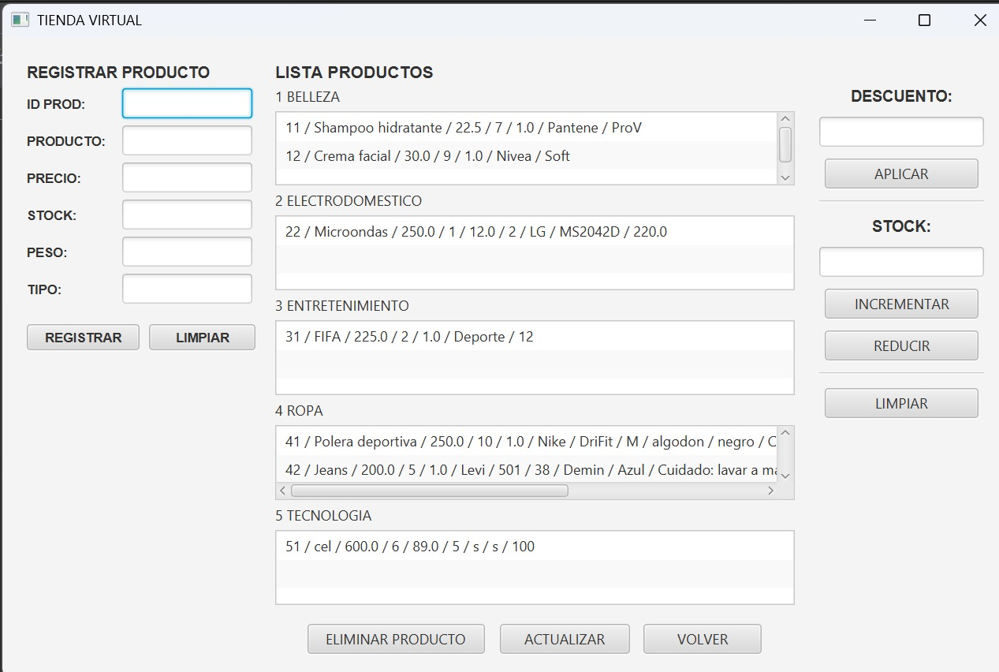

🖼️ Imagen del Proyecto "Tienda Virtual"  Figura 1: Imagen del apartado del administrador en la tienda virtual.
🎙️ Audio de la Presentación del Proyecto Audio explicativo de cómo funciona el programa. Tu navegador no soporta la reproducción de audio nativo HTML5. Audio 1: Explicación de la ejecución del programa.
🎬 Video de la Presentación del Proyecto Un breve resumen explicativo del proyecto. Tu navegador no admite la reproducción de video nativo en HTML5. Video 1: Video explicativo de cómo funciona el programa.